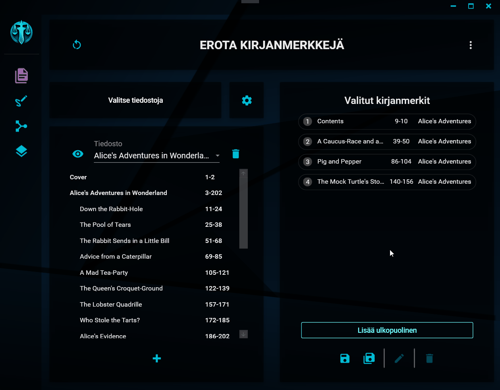
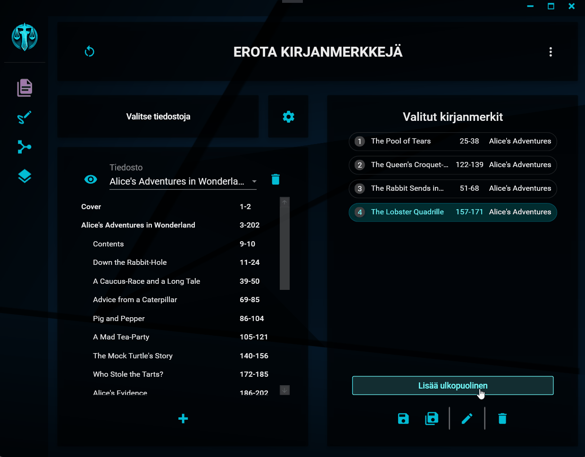

Kirjanmerkkien järjesteleminen
Merkkien järjestyksen vaihtaminen
Merkkien järjestys

Valittujen kirjanmerkkien keskinäistä järjestystä voi muuttaa valittujen kirjanmerkkien luettelossa kahdella eri tavalla:
1. Valitse, raahaa ja pudota
Ensimmäinen tapa on käyttää niin sanottua drag and drop -toimintoa. Tartu uudelleensijoitettavaan merkkiin kiinni hiirellä, raahaa se haluttuun kohtaan (kohde näytetään harmaalla valitsimella) ja päästä merkistä irti. Kirjanmerkki sijoitetaan uuteen väliin ja sen sekä kaikkien sitä seuraavien kirjanmerkkien järjestysnumero muuttuu.
2. Valitse, paina CTRL ja nuolinäppäimet
Toinen tapa on valita kirjanmerkki klikkaamalla sitä ja sen jälkeen painaa samanaikaisesti pohjaan näppäimistön CTRL-painike sekä ylös- tai alaspäin osoittava nuolinäppäin sen mukaan, kumpaan suuntaan haluat merkkiä liikuttaa. Merkki vaihtaa paikkaa ja sen sekä kaikkien sitä seuraavien kirjanmerkkien järjestysnumero muuttuu.
Ulkopuolisen tiedoston merkinnän lisääminen
Ulkopuolinen tiedosto

Klikkaamalla Lisää ulkopuolinen -painiketta, voit lisätä valittujen kirjanmerkkien luetteloon merkinnän ulkopuolisesta tiedostosta. Tällainen merkintä ei vaikuta itse erotteluun mitenkään, mutta se vaikuttaa tiedostojen nimeämiseen. Ulkopuolisen tiedoston merkintä vie yhden järjestysnumeron paikan, millä on vaikutusta lopputiedostoja nimettäessä silloin, kun nimen rakenteessa on käytössä numeron paikkavaraus [numero]. Tällöin numerointiin lisätään yksi siinä kohtaa, johon ulkopuolisen tiedoston merkintä on lisätty.
Esimerkki
Valittuna ovat seuraavat eroteltavat kirjanmerkit, joiden väliin on sijoitettu ulkopuolisen tiedoston merkintä:
Tiliote
Valokuvat
ULKOPUOLINEN TIEDOSTO
Kirje
Tiedoston nimeämisen rakenteeksi on asetettu seuraava malli:
Tiedosto [numero] [kirjanmerkki]
Kun erottelu toteutetaan, tuotetaan seuraavalla tavalla nimetyt tiedostot:
Tiedosto 1 Tiliote.pdf
Tiedosto 2 Valokuvat.pdf
Tiedosto 4 Kirje.pdf
Ulkopuolisen tiedoston merkinnän paikkaa voi vaihtaa, kuten muidenkin merkkien paikkaa ja sen voi halutessaan poistaa, kuten muutkin merkit.
"You can’t hide from the Grim Reaper. Especially when he’s got a gun." - Manuel Calavera